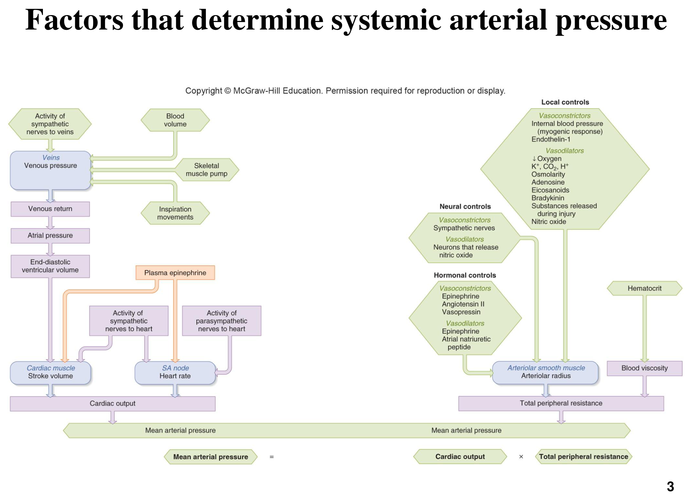
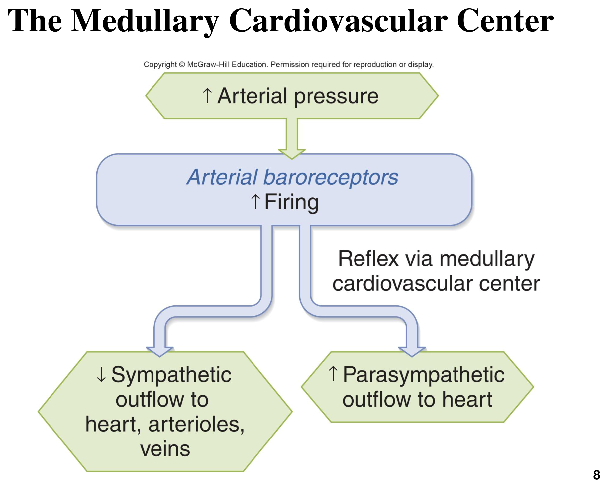
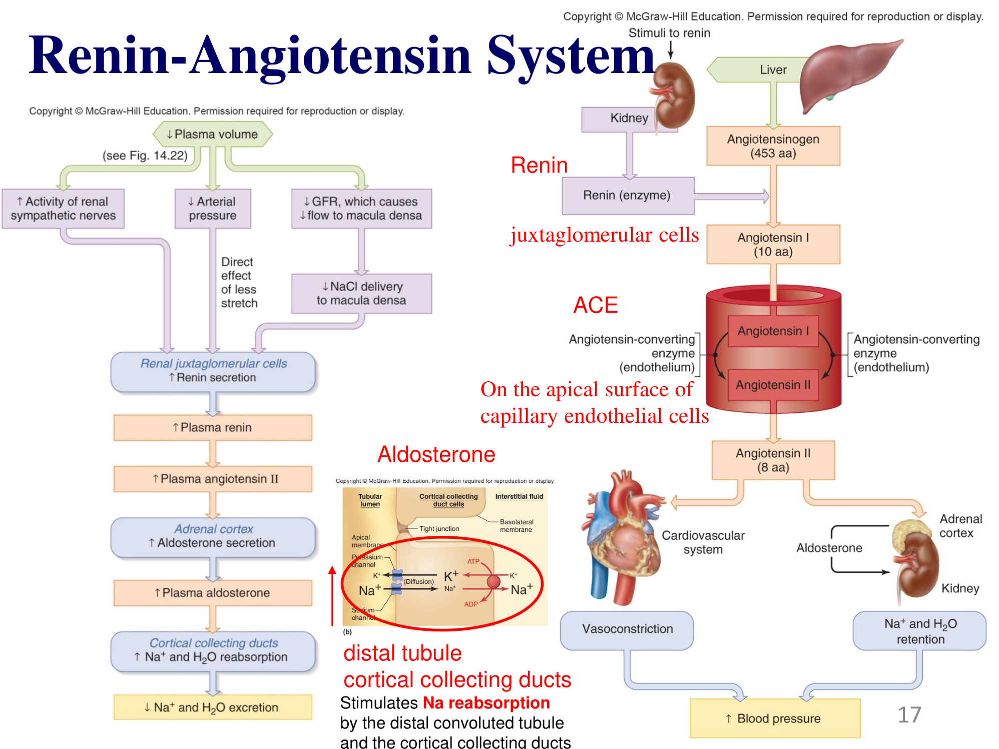
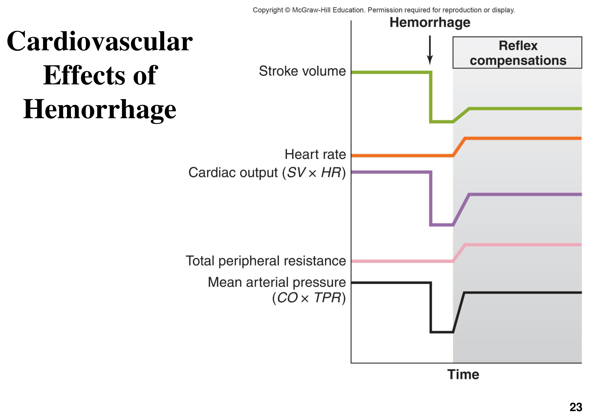

全身動脈壓的決定因子
本章統合前兩章（心臟生理學、血管生理學）的個別機轉，說明身體如何整合心臟輸出與血管阻力，共同決定並維持全身動脈壓的恆定。核心公式：MAP = CO × TPR。

此圖顯示MAP的兩條主要決定路徑：心輸出量（CO）路徑——靜脈壓（受交感神經、血容量、肌肉幫浦、呼吸運動影響）→靜脈回流→心房壓→EDV（決定每搏量，見「心臟生理學」章節Frank-Starling機轉）；交感/副交感神經與循環腎上腺素也直接調控每搏量與心率。總周邊阻力（TPR）路徑——神經、激素、局部三大類因子（見「血管生理學」章節）共同決定小動脈半徑，加上血液黏滯度（受血比容影響）共同構成TPR。
TPR又稱全身血管阻力（Systemic Vascular Resistance, SVR），是全身所有體循環血管阻力的總和。理解MAP = CO × TPR這個公式，就能系統性地推論任何影響心臟或血管的因素（藥物、疾病、生理狀態）最終如何影響血壓——這是心血管生理學貫穿全部三章的核心整合公式。
壓力感受反射
壓力感受反射（baroreceptor reflex）是身體對抗血壓瞬間波動最快速、最重要的負回饋機制，作用時間以秒計算。
動脈壓力感受器的位置
主要感受器位於頸動脈竇（carotid sinus）與主動脈弓（aortic arch）；此外，大靜脈、肺血管與心臟壁也含有壓力感受器，共同參與循環系統整體容積與壓力的偵測。

壓力感受反射的完整效果鏈
當動脈壓上升，壓力感受器放電增加，經反射導致：(1) 副交感傳出增加＋交感傳出減少至心臟→心率下降；(2) 交感傳出減少至心臟→收縮力下降；(3) 交感傳出減少至小動脈→血管舒張，TPR下降；(4) 交感傳出減少至靜脈→靜脈舒張，靜脈回流減少。四者共同作用使心輸出量與TPR皆下降，MAP因而回降至正常範圍；血壓下降時則產生方向完全相反的代償反應（交感增加、副交感減少）。
延腦心血管中樞
壓力感受反射的整合中樞位於延腦，由多個功能不同的核團組成，理解各核團分工是進階理解自主神經藥理學（如中樞性降壓藥）的基礎。
| 核團 | 主要功能 |
|---|---|
| 孤束核 Nucleus Tractus Solitarius (NTS) | 接收周邊壓力感受器與化學感受器的傳入訊息，作為整合中心，是血壓與心率調節的核心傳入中心 |
| 延腦頭端腹外側區 Rostral Ventrolateral Medulla (RVLM) | 維持交感神經活性，促進交感興奮以調節血壓與血管收縮，是控制心血管系統的主要驅動力 |
| 疑核 Nucleus Ambiguus (AMB) | 控制心迷走神經活動，調節心跳速率，促進心率減慢，是副交感調節的核心 |
| 延腦尾端腹外側區 Caudal Ventrolateral Medulla (CVLM) | 抑制RVLM活動，經降低交感傳出促進血管擴張與血壓下降，是負回饋迴路的一環 |
脊髓中間外側細胞柱 IML
脊髓灰質側角的中間外側細胞柱（Intermediolateral Cell Column, IML），主要分布於胸腰段脊髓（T1–L2），是交感神經節前神經元的所在位置，負責向交感神經節傳遞來自延腦中樞的訊號，並整合自主神經系統對心率、血壓、血管張力與其他內臟功能的調控。
室旁核 PVN
下視丘的室旁核（Paraventricular Nucleus, PVN）是連結下視丘與其他腦區的重要節點，同時參與：(1) 內分泌調節（分泌ADH與CRH，見「內分泌生理I」章節）；(2) 經腦幹與脊髓連接調控交感／副交感活動；(3) 食慾與能量代謝調控；(4) 壓力反應（stress response）的核心整合節點——顯示心血管調控與壓力反應、內分泌系統之間高度整合，並非各自獨立運作。
RAAS與長期血壓調控
壓力感受反射雖反應快速，但屬短期調控，數天內會因受器重新設定（resetting）而失去敏感度；長期血壓調控最重要的因子是血容量，主要由腎素-血管收縮素-醛固酮系統（RAAS）與ADH共同負責。

刺激腎素分泌的三個訊號
- 腎交感神經活性增加
- 動脈壓下降（腎絲球旁細胞本身的壓力感受能力）
- 腎絲球過濾率下降，經黃斑密緻細胞（macula densa）偵測到流至遠曲小管的NaCl減少
Angiotensin II 的雙重作用
Angiotensin II同時具有：(1) 直接強力縮血管效果（見「血管生理學」章節）；(2) 刺激腎上腺皮質分泌醛固酮，促進遠曲小管與皮質集合管的Na⁺再吸收（同時經Na⁺-K⁺幫浦促進K⁺排除），伴隨水分再吸收增加，提升血容量。兩種作用短期與長期共同提升血壓。
ADH（Vasopressin）的雙重效果
低血容或高滲透壓刺激下視丘釋放ADH：(1) 經腎臟V2受體促進水分再吸收（AQP2插入集合管細胞膜），降低血液滲透壓、提升血容量；(2) 高劑量時經血管平滑肌V1A受體直接引發血管收縮，升高血壓——此為ADH又稱「血管加壓素（vasopressin）」的由來。
ACE抑制劑（如enalapril）阻斷Angiotensin II生成；AT1受體拮抗劑直接阻斷其受體；醛固酮受體拮抗劑（spironolactone）屬保鉀利尿劑，競爭性阻斷醛固酮作用、減少遠曲小管Na⁺-K⁺幫浦數量，因而減少鉀離子排除；保鉀利尿劑也可直接阻斷鈉離子通道達到同樣保鉀效果。這些藥物皆透過阻斷RAAS路徑的不同節點來降低血壓，是心臟病與高血壓治療的核心藥物類別。
出血的代償反應
急性出血是壓力感受反射與後續代償機制共同作用的經典臨床情境，理解其時序變化是急重症生理學的重要基礎。

出血代償的時序邏輯
自體輸血機轉 Autotransfusion
出血後微血管靜水壓下降，使淨過濾壓向再吸收方向偏移（見「血管生理學」章節NFP公式），組織間液因而淨移入血管內，部分代償失去的血容量，此現象稱自體輸血機轉（autotransfusion），是身體對抗急性失血的內源性代償之一，但代償量有限，嚴重出血仍需輸液或輸血治療。
臨床評估出血性休克動物時，心率上升與虛弱的脈搏（因每搏量下降而脈搏壓變小）是壓力感受反射代償階段的典型徵候；若代償機制耗竭（持續大量出血），MAP將無法維持，進入失代償性休克。
其他心血管反射
除壓力感受反射與RAAS外，中樞神經系統仍會整合來自更高層腦區與其他感覺輸入的訊號，調整心血管活動以因應多種生理情境。
動脈血氧濃度下降合併二氧化碳上升、腦血流量下降、行走運動、皮膚傷害性疼痛、壓力與不悅情緒、Cushing氏現象（顱內壓上升引發的代償性血壓上升，見「意識腦與行為」章節腦血流相關概念）
內臟或關節來源的疼痛、性活動、愉悅情緒
這些訊號的共同路徑是：(1) 由各類受器或高層腦區（大腦皮質、下視丘）傳入延腦心血管中樞；(2) 大腦皮質與下視丘也可直接與脊髓交感神經元形成突觸連結，繞過部分延腦整合、直接調節心血管活動——這是「戰或逃反應」等高層情緒/認知狀態能快速引發心血管變化的解剖基礎。
姿勢性（直立性）低血壓 Orthostatic Hypotension
從臥姿或蹲姿快速站起時，因重力使血液暫時蓄積於下肢靜脈（靜脈回流瞬間減少），造成暫時性血壓下降，稱姿勢性低血壓。機轉：直立姿勢時骨骼肌收縮擠壓靜脈的效果被打斷，血柱連續性中斷，靜脈池積血增加、微血管過濾增加，若壓力感受反射代償不及，會出現暫時性頭暈甚至暈厥。長期臥床動物、自主神經功能障礙動物風險較高。
循環休克
循環休克（circulatory shock）指血流無法滿足組織代謝需求的狀態，依主要病理生理機轉分三大類，是急重症臨床上最重要的鑑別分類架構之一。
| 類型 | 核心機轉 | 常見病因 |
|---|---|---|
| 低血容性休克 Hypovolemic Shock | 血容量大幅下降；心率代償性上升（脈搏微弱） | 大量出血、嚴重嘔吐/腹瀉、大面積燒燙傷；最常見類型，需積極補液治療 |
| 低阻力性休克 Low-resistance Shock | 血容量正常，但血管床異常擴張使TPR大幅下降、MAP隨之驟降 | 過敏性休克（anaphylactic shock）、神經性休克（neurogenic shock，血管張力調控喪失）、敗血性休克（septic shock） |
| 心因性休克 Cardiogenic Shock | 心臟幫浦本身衰竭，無法維持有效循環 | 嚴重心肌梗塞、心肌病變、嚴重心律不整 |
短暫性低阻力性休克也可能發生於健康個體（如長時間曝曬陽光後站立過快，皮膚血管過度舒張使血液蓄積、腦部灌流暫時不足而暈眩），血管收縮恢復後即可緩解——理解此類生理性、可逆的低阻力狀態有助於與病理性休克鑑別。
運動的心血管反應
運動時身體需重新分配血流，優先供應運動所需的組織，同時維持對關鍵器官（腦、心臟）供血不受影響。
運動時的血流重新分配
運動中血流會依組織即時需求動態調整：骨骼肌與心臟的血流大幅增加（局部代謝性血管舒張，見「血管生理學」章節主動充血機轉）；腸胃道血流減少（交感血管收縮，暫緩消化功能）；腦部血流始終維持在最低必要水平不受影響——這是腦部血流自我調節優先權最高的具體展現。同時心率與心收縮力（交感興奮）、TPR變化（骨骼肌血管舒張但其餘血管代償性收縮）共同決定整體心輸出量與MAP的變化幅度。
高血壓
高血壓（hypertension）是慢性持續性血壓上升，常被稱為「沉默的殺手」，因多數個體早期無自覺症狀，卻已對多重器官造成累積性損害。
原發性 vs 續發性高血壓
約占90%，通常沒有單一明確病因，與飲食（高鈉、高膽固醇）、肥胖、年齡、遺傳、糖尿病、壓力、吸菸等多重因子相關，需長期以飲食、運動、生活型態調整與藥物共同管理
由明確疾病引起，常見病因包括腎上腺髓質腫瘤（嗜鉻細胞瘤）、庫欣氏症（見「內分泌生理II」章節）、腎動脈狹窄、腎臟病、動脈硬化、甲狀腺機能亢進；病因移除或手術治療後血壓可改善或痊癒
長期高血壓的器官損害
長期血壓過高是心衰竭、腎衰竭、中風與血管疾病的主要成因，因心臟長期對抗過高後負荷（見「心臟生理學」章節後負荷概念）而代償性肥大，最終可能進展為失代償性心衰竭；血管壁長期承受過高壓力也加速動脈硬化進程。臨床治療藥物涵蓋利尿劑、β受體阻斷劑、鈣離子通道阻斷劑、ACE抑制劑與AT1受體拮抗劑，分別作用於MAP = CO × TPR公式中的不同節點。
學習重點整理
本章是心血管三部曲的整合終章，核心是「MAP = CO × TPR」公式如何串起心臟、血管、腎臟、神經與內分泌系統的協同運作。考題常考「壓力感受反射方向性」「RAAS完整路徑」「休克三分類」「出血代償時序」。
練習題
涵蓋MAP整合公式、壓力感受反射、RAAS、出血代償、循環休克等章節重點，題型參照國考與轉學考命題方向（含臨床病例整合題），先自己作答再點「顯示答案」核對。
血壓上升時，壓力感受器放電增加，經延腦心血管中樞整合後，交感傳出減少（心臟、小動脈、靜脈皆放鬆或減少收縮）、副交感傳出增加（心率減慢），兩者共同作用使心輸出量與總周邊阻力皆下降，MAP因而回降至正常範圍，這是負回饋調控的典型範例。
RVLM負責維持並驅動交感神經活性，是控制心血管系統的主要驅動力；NTS是傳入訊息的整合中心；AMB控制心迷走神經、調節心率減慢；CVLM則抑制RVLM，促進血管舒張與血壓下降，四者構成完整的延腦心血管調控迴路。
壓力感受反射是最快速的「短期」調控機制，但受器會在持續性血壓改變後數天內重新設定（resetting），因而不適合作為長期血壓調控的主要機制。長期血壓調控最重要的因子是血容量，主要由腎素-血管收縮素-醛固酮系統（RAAS）與抗利尿激素（ADH）負責。
血管收縮素轉化酶（ACE）位於微血管內皮細胞的頂端表面，特別是肺循環微血管密度最高，負責將Angiotensin I切割為具活性的Angiotensin II。血管收縮素原由肝臟合成，腎素由腎絲球旁細胞分泌，醛固酮則由腎上腺皮質分泌，四者分屬RAAS路徑不同節點。
出血後血容量下降使每搏量下降，壓力感受反射啟動後交感神經興奮，使心率上升、小動脈與靜脈收縮（總周邊阻力上升）以代償，使MAP部分回升至新的穩定狀態；但由於血容量尚未真正恢復，每搏量仍維持在較低水平，這正是心率上升、脈搏微弱是出血性休克代償期典型臨床徵候的生理基礎。
過敏性休克屬於低阻力性休克（low-resistance shock），核心機轉是血容量正常但血管床異常擴張（過敏介質引發廣泛性血管舒張），導致總周邊阻力大幅下降、MAP隨之驟降；因血管擴張而非血容量不足，臨床上常見四肢溫熱、脈搏相對洪大（而非低血容性休克常見的四肢冰冷、脈搏微弱），是鑑別休克類型的重要臨床線索。
急性出血後血容量下降，導致微血管內的靜水壓（HPc）隨之下降。依淨過濾壓公式 NFP = (HPc−HPif)−(OPc−OPif)，HPc下降會使淨過濾壓的方向從原本的過濾為主，偏向再吸收方向移動，也就是微血管外的組織間液會因血管內外壓力差改變而淨移入微血管內。這個過程稱為自體輸血機轉，能在一定程度上補充血管內流失的血容量，是身體對抗急性失血的內源性代償反應之一。但此機轉能代償的量有限，若出血持續且大量，仍需要外部輸液或輸血治療才能維持有效循環。
運動時骨骼肌與心臟因局部代謝性血管舒張（主動充血）血流大幅增加；腸胃道因交感血管收縮而血流減少，暫緩消化功能；腦部血流因其自我調節優先權最高，始終維持在最低必要水平、幾乎不受影響。這種選擇性血流重新分配確保運動所需的組織獲得足夠灌流，同時保護腦部這類對缺血極敏感的關鍵器官。
續發性高血壓由明確可辨識的疾病引起，如腎上腺髓質腫瘤（嗜鉻細胞瘤）、庫欣氏症、腎動脈狹窄、甲狀腺機能亢進等，針對病因治療後血壓常可改善甚至痊癒。原發性（本態性）高血壓約占90%，通常沒有單一明確病因，與飲食、肥胖、年齡、遺傳、糖尿病、壓力等多重因子相關，需要長期以生活型態調整與藥物共同管理，無法單靠移除單一病因痊癒。
Spironolactone是醛固酮受體拮抗劑，競爭性阻斷醛固酮與其受體結合，使遠曲小管與皮質集合管細胞上的Na⁺-K⁺幫浦數量減少，因鉀離子排除主要依賴此幫浦的活性，故連帶降低鉀離子排除、達到保鉀效果，這與直接阻斷鈉離子通道的另一類保鉀利尿劑機轉不同，但同樣達到保鉀目的。